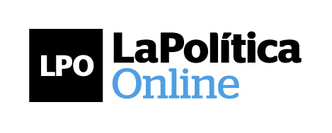

PASO
- El gráfico muestra el rango del porcentaje de los votos que obtendrá cada frente electoral en las PASO (Primarias Abiertas, Simultáneas y Obligatorias) del domingo 9 de agosto del 2015.
- Las bandas marcan el mínimo y el máximo del porcentaje de votos que las encuestas indican que obtendrá cada frente, con un 95% de probabilidad. El círculo marca el promedio que arrojan las encuestas.
Primera Vuelta
- El gráfico muestra el rango del porcentaje de los votos que cada candidato en la primera vuelta de las Elecciones Presidenciales del domingo 25 de octubre del 2015.
- El candidato de cada frente electoral fue elegido por el Observatorio de acuerdo a quien las encuestas indican que está primero en la competencia interna de cada frente.
- Las bandas marcan el mínimo y el máximo del porcentaje de votos que las encuestas indican que obtendrá cada candidato, con un 95% de probabilidad. El círculo marca el promedio que arrojan las encuestas.
Diferencias
- El cuadro permite ver la probabilidad de que un candidato le gane a otro en la Primera Vuelta de octubre, según el promedio y el desvío de cada candidato obtenidas de las encuestas de esta categoría.
- Elegí un candidato de cada columna y el Observatorio te dará la posibilidad (sobre 100%) de que el candidato de la izquierda le gane o le saque una determinada diferencia de puntos al de la derecha. Un gráfico te mostrará la evolución de este margen desde el último octubre.
Ratings
- El Observatorio de Encuestas desarrolló un sistema de ratings para las encuestadoras, que permite asignarle un peso relativo a cada encuesta en el cálculo de los promedios y desvíos estándar, de acuerdo a la performance histórica de esa consultora.
Encuestas
- En este pestaña podés ver las encuestas tomadas por el Observatorio de Encuestas, ordenadas desde la última que se ingresó a la plataforma hasta la primera. Próximamente vas a poder descargar todas las encuestas utilizadas.
Metodología
Bienvenidos al Observatorio de LPO

Por Ignacio Fidanza
La nueva plataforma de La Política Online ipsum lorem ipsen flutiatios peril ortun medol Coldiop Vestibulum euismod in ex eu pretium. Integer hendrerit, turpis at scelerisque ipsum lorem ipsen flutiatios
El desafío de cuantificar la política
Por Juan Pablo Djeredjian
La nueva plataforma de La Política Online ipsum lorem ipsen flutiatios peril ortun medol Coldiop Vestibulum euismod in ex eu pretium. Integer hendrerit, turpis at scelerisque ipsum lorem ipsen flutiatios